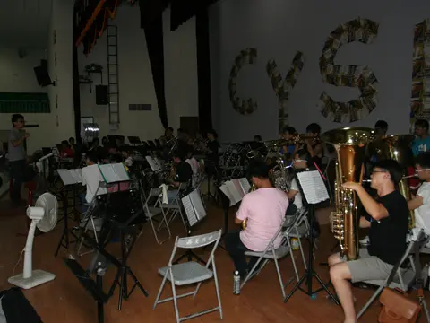
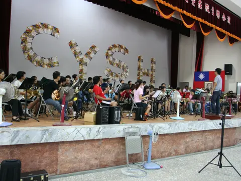
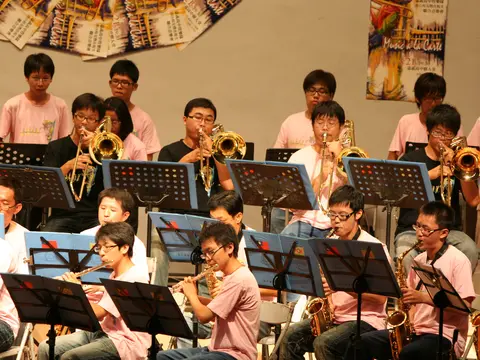
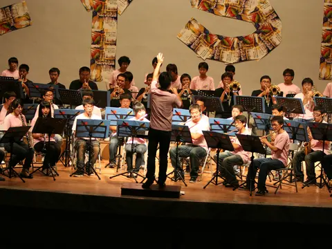

演出資訊
| 屆別 | 第 26 屆 |
|---|---|
| 年度 | 2010（民國 99 年） |
| 主題 | 《Music à la Carte》 |
| 日期 | 2010.08.21 |
| 時間 | 19:30 |
| 場地 | 嘉義高中校內 確切廳名待考 |
| 指揮 | 資料待考 |
| 獨奏／協奏 | 方崇任（長號／Launy Grøndahl: Trombone Concerto） |
| 籌辦字頭 | 待考 |
| 票務 | 票務資訊待考 |
| 資料狀態 | 部分可考 |
待補欄位：指揮、完整曲目。
關於這場音樂會
2010 年 8 月 21 日（六），第 26 屆嘉義高中校友暨在校生聯合音樂會登場，主題為《Music à la Carte》。校友保留的原始照片，記錄了午後烈日下的彩排，到晚間正式演出的完整過程。
本屆場地全名、指揮與完整曲目資訊仍在考證中；照片中舞台布條清楚可見「第二十六屆國立嘉義高中校友暨在校生聯合演奏會」字樣，確認了屆數與活動性質。若您是當年參與的校友，歡迎透過粉絲專頁與我們聯繫，協助補齊細節。
指揮與獨奏

曲目
完整曲目待考證。
若尚未顯示上下半場或完整曲序，表示目前資料尚不足以確認正式節目順序；後續會依節目冊與校友補充資料校對。
演出人員名單
幕後行政團隊
幕後行政團隊名單仍待補齊；若您保存籌備文件或工作人員名單，歡迎協助補充。
贊助與致謝
贊助、協辦與致謝名單仍待節目冊或海報補齊。
演出留影





節目冊
目前尚未整理到可公開呈現的完整節目冊掃描圖檔。
影片連結
相關文章
目前尚無已整理的相關文章。
資料補充
本頁照片由校友提供之原始相簿整理而成，依影像保存脈絡排列；場地全名、指揮、曲目等文字資訊仍待進一步查證與校友補充，如需更正請透過粉絲專頁與我們聯繫。
目前仍待補：指揮、完整曲目。